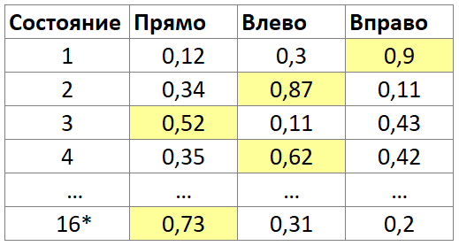
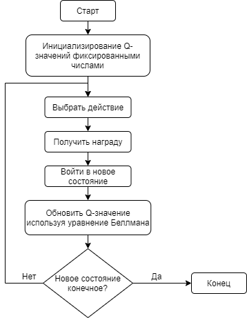

Нейронная сеть
Нейронная сеть — это, в первую очередь, последовательность нейронов.
Нейрон — это несложный автомат, преобразующий входные сигналы в выходной сигнал. При этом моделируются:
Передаточная функция (функция активации), определяющая условия возбуждения нейрона в зависимости от силы полученных сигналов. Обычно имеет область значений [-1;1] или [0,1]. Наиболее известные виды этой функции: линейная (выходной сигнал нейрона равен его потенциалу), пороговая (нейрон активен или неактивен), многопороговая (выходной сигнал может принимать одно из q значений, определяемых q-1 порогом внутри предельных значений), сигмоидная;
Сила полученного сигнала, которая умножается на некоторое число. Это число называется весом синапса или весом соответствующего входу нейрона.
Число входных нейронов;
Число выходных нейронов.
Математическая модель нейрона
На рисунке сигналы силы x1, x2, ..., xn, поступая на синапсы, преобразуются линейным образом, т.е. к телу нейрона поступают сигналы силы w1*x1, w2*x2, ..., wn*xn (здесь wi — веса соответствующих синапсов).
Для удобства к нейрону добавляется еще один вход (и еще один вес w0), считая, что на этот вход всегда подается сигнал силы 1. В теле нейрона проис-ходит суммирование сигналов
Затем к сумме применяется некоторая фиксированная передаточная функция f и на выход выдается сигнал силы Y = f(S).
Обычно сеть состоит из входного слоя нейронов, выполняющего задачу распределения входных сигналов остальным нейронам и не производящего никаких вычислений; одного или несколько скрытых слоев вычислительных нейронов и одного выходного слоя. В литературе нет единообразия относительно того, как считать число слоев в многослойных нейронных сетях. Одни предлагают считать число слоев, включая не суммирующий входной слой, другие – считать, только слои, выполняющие суммирование.
Модель нейронной сети
Многослойная нейронная сеть имеет потенциал моделировать функцию практически любой степени сложности, при этом число слоев и число элементов в каждом слое определяют сложность функции. Одним из важнейших вопросов при конструировании нейронных сетей является определение числа промежуточных слоев и числа элементов в них. Строгой теории на эту тему пока не существует, поэтому эти данные, как правило, подбираются экспериментально или по рекомендациям статьей на соответствующую тему.
Обучение с подкреплением
Обучение с подкреплением — это подход, основанный на Марковском процессе принятия решений, который моделирует принятие решения в ситуациях, где результаты частично случайны и частично под контролем лица, принимающего решения.
Традиционные подходы машинного обучения — с учителем и без учителя. При обучении с учителем нейронная сеть обучается на размеченном наборе данных. Используя множество объектов и множество возможных ответов, она находит зависимость между ними и учится предсказывать ответы для других объектов. При обучении без учителя, набор размеченных данных отсутствует, то есть для множества объектов не указано множество решений. В этом случае, нейронная сеть пытается самостоятельно найти корреляции в данных, извлекая полезные признаки и анализируя их. Таким образом, для традиционных подходов требуется наличие размеченных или неразмеченных входных данных, чего в нашем случае нет.
В обучении с подкреплением есть два основных компонента: среда (игра) и агент (нейронная сеть, управляющая змейкой). Агент воздействует на среду, а среда воздействует на агента - происходит обратная связь, в результате которой агент старается принимать такие действия, чтобы получить максимальный и долговременный выигрыш. Каждый раз, когда агент выполняет действие, среда выдает ему вознаграждение, которое может быть положительным или отрицательным в зависимости о того, насколько успешное действие было совершено. Цель агента – узнать, какие действия максимизируют вознаграждения при определенных состояниях.
Взаимодействие среды и агента
Обучение с подкреплением можно реализовать различными алгоритмами. Одни из наиболее популярных – это метод Монте-Карло, Q-обучение, глубокое Q-обучение, SARSA (State–action–reward–state–action). В данном проекте рассматривается алгоритм глубокого Q-обучения.
Q-обучение нейронной сети
Существует несколько вариаций Q-обучения: стандартное Q-обучение и глубокое Q-обучение. Так как глубокое Q-обучение во многом основывается на стандартном, сначала опишем его.
Q-обучение (Q-learning) — метод, применяемый в искусственном интеллекте при агентном подходе. На основе получаемого от среды вознаграждения агент формирует функцию полезности Q, что впоследствии дает ему возможность уже не случайно выбирать стратегию поведения, а учитывать опыт предыдущего взаимодействия со средой.
Функция полезности Q принимает 2 аргумента: действие и состояние. Состояния (states) – это массив, содержащий некоторые параметры, описывающие окружающую среду, которые агент получает на каждом шаге (например, в какой стороне еда и есть ли рядом стена). Действия описывают возможные ходы агента (например, повернуть налево или направо или идти прямо).
Агент принимает решения с помощью Q-таблицы. Q-таблица — это матрица, которая соотносит состояние агента с возможными действиями, которые агент может предпринять. Значения в таблице — это вероятность успеха действия, которая в процессе обучения будет основываться на наградах. Так, в состоянии 1 агенту будет лучше пойти вверх.

Q-таблица
Каждое значение этой таблицы высчитывается по уравнению Беллмана (также известное как уравнение динамического программирования):
- s – состояние (state),
- a – действие (action),
- s’ – новое состояние,
- a’ – действия для нового состояния,
- Q – текущее Q значение,
- r – награда,
- α – скорость обучения,
- γ - ставка дисконтирования (discount rate),
- maxQ’ – максимальное Q-значение при новом состоянии.
Алгоритм Q-обучения описан на рисунке ниже. Вначале работы алгоритма, значения Q-таблицы инициализируются фиксированными значени-ями (обычно выбираются произвольные числа). При каждом ходе агент выбирает действие, получает награду и входит в новое состояние, после чего обновляется Q-значение. Алгоритм заключается в обновлении значений по уравнению Беллмана.

Алгоритм Q-обучения
Проблема Q-обучения заключается в способе хранения и обработки Q-значений – табличном. Когда количество состояний и действий довольно велико, таблица становится слишком большой, обработка ее значений занимает много времени и замедляет работу агента.
Глубокое Q-обучение нейронной сети (DQN)
Глубокое Q-обучение (Deep Q-learning, DQN) – вариация Q-обучения с использованием нейронной сети. Нейронная сеть используется для аппроксимации функции Беллмана. Состояния принимаются как входной слой, а действия – как выходной слой. Некоторые параметры должны сохраняться вручную (состояние, действие, следующее состояние, награда) для обучения нейронной сети. В этом случае, максимальное значение, вычисленное нейронной сетью, будет определять следующее действие.
В алгоритме Q-обучения используются такие понятия, как опыт, датасет памяти, состоящий из опыта, и воспроизведение памяти. Опыт – это список, инициируемый значениями: текущее состояние, действие, награда, следующее состояние. Мы сохраняем текущий опыт агента в датасете "память". Из этой памяти в последствии будут случайным образом выбираться данные для обучения нейронной сети.
Алгоритм Q-обучения представлен на рисунке ниже. Для каждой игры алгоритм инициирует игру, игрока и еду дефолтными значениями, после чего, пока не закончится игра, выполняется ряд действий, собирающий данные для обучения нейронной сети. Важным моментом при этом является задание значения Эпсилон. При игровом режиме, Эпсилон всегда инициируется значением 0.01, при котором выбор действия почти всегда будет основан на предсказаниях. При тренировочном режиме, эпсилон сначала близок к единице, но с увеличением количества игр будет стремиться к нулю, что позволяет по началу больше основываться на случайном выборе действий, а в конце – больше основываться на предсказании.
DQN алгоритм
Параметры нейронной сети
Коэффициент уменьшения случайности – скорость уменьшения случайности действий (эпсилон Е). E=1 - действие полностью случайно, E=0 - действие не выбирается случайным образом. Обычно обучение начинают с больших значений E (0.9 - 1) и постепенно сокращают до меньшего значения (0.1 и меньше).
Коэффициент скорости обучения – это параметр градиентных алгоритмов обучения нейронных сетей, позволяющий управлять величиной коррекции весов на каждой итерации. При малых значениях коэффициента (0,1 - 0,3), шаг коррекции весов будет небольшим - высокая точность, но медленный алгоритм. При больших значениях (0,7 - 1), шаг коррекции будет большим - быстрый алгоритм, но невысокая точность.
Размер датасета памяти – датасет, формируемых в процессе обучения, из которого случайным образом в размере батча выбираются данные для обучения нейронной сети.
Размер батча – максимальное количество данных, на которых будет тренироваться нейронная сеть после каждой игры.
Количество игр – параметр, определяющий длительность обучения. Игра считается законченной, когда змейка ударяется о препятствие.